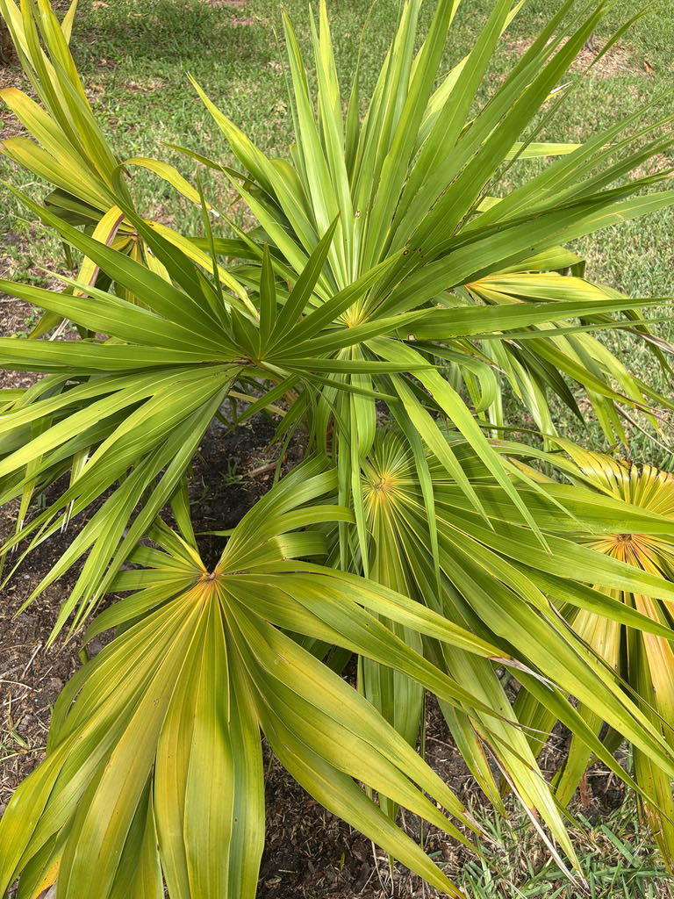

- This palm is an endangered species in Florida — not because it is rare globally, but because its wild Florida footprint is tiny: the Keys, the southern tip of the mainland, and a single site in Collier County. The thriving cultivated specimens you see in Bradenton exist largely outside its historic native range.
- The Florida Thatch Palm has no crownshaft — the feature that gives palms like the Royal Palm their clean, smooth collar between trunk and crown. Here the fronds attach directly to the trunk, which is why old leaf bases linger as a rough, fibrous sleeve near the top.
- At about six inches of height per year, this palm earns its 'slow-growing' reputation the hard way. A mature specimen twenty feet tall may have spent four decades getting there.
- The common name is honest: the fronds have been harvested for centuries across the Caribbean for thatched roofing, broom making, handicrafts, and food wrapping. In the Yucatan, fishermen have also used the trunks to build lobster traps.
The Florida Thatch Palm is native to the Caribbean basin and the coastal edges of Central America — ranging through the Bahamas, Cuba, Hispaniola, Jamaica, the Cayman Islands, the Yucatan Peninsula, Belize, Honduras, and Nicaragua.
In the United States, it occurs naturally only in the Florida Keys, the extreme southern mainland along Florida Bay, and a single site on Keewadin Island in Collier County.
Within that narrow Florida footprint, the species grows in tropical rockland hammock, coastal berm, maritime hammock, and occasionally pineland — always on calcareous soils at or near sea level. It is rare and legally protected throughout its natural Florida range.
The cultivated palms now widely planted from Miami northward exist well outside that historic territory, a testament to the tree's adaptability even if it is pushing the limits of its cold tolerance.
- The Florida Thatch Palm is listed as an Endangered species by the state of Florida — wild plants may not be collected without a permit from the Florida Department of Agriculture and Consumer Services. The global picture is less dire; the species is considered secure across its broader Caribbean range, but populations in Florida are sparse enough that the state listing is entirely warranted.
- The genus name Thrinax is drawn from the ancient Greek word for a three-pronged fork or rake, a reference to the palm's divided, fan-shaped leaves. The species epithet radiata — 'radiating' — describes those same leaves: segments spreading outward from a central point like the spokes of a wheel.
- Though it was once thought by some botanists to belong to the related genus Coccothrinax, Thrinax radiata is now firmly in its own genus. One quick field tell separates the two: Thrinax produces white fruit; Coccothrinax produces dark purple ones. The split petiole base — a forked, upside-down V where the leaf attaches — is another Thrinax signature that Coccothrinax does not share.
The flowering stalks attract bees and other pollinators, and the white, bead-like fruits that follow are a reliable food source for birds throughout the year. Seed dispersal is almost entirely animal-driven — across the palm's broader Caribbean range, bats, toucans, and even spider monkeys take the fruit and carry the seeds into new territory. In Florida, birds do that same work.
The Florida Thatch Palm is also documented as a larval host for the Monk Skipper (Asbolis capucinus), a stout, mahogany-winged butterfly of South Florida's hammocks and coastal scrub. The Monk Skipper uses a range of native palms to complete its life cycle, and this species is among the confirmed hosts. The dense crown also offers shelter and potential nesting cover for small birds.
Propagation is by seed only — the seeds must be de-pulped before sowing. The palm does not sucker or produce offshoots. Plants grown in full sun develop a denser, more rounded canopy; those in shade grow more slowly with a looser, more open habit.
Small, white, and fragrant — borne on arching, branched stalks up to three feet long that emerge from among the leaf bases. Flowering occurs primarily in summer. The flowers are bisexual, meaning a single tree can set fruit without a separate male or female partner.
Small, round, white drupes roughly a half-inch to three-quarters of an inch in diameter, ripening to a translucent white that gives them a bead-like appearance. They are not edible, but birds find them attractive. Seeds are dispersed almost entirely by animals.
Palmate (fan-shaped), medium to dark green above and silvery beneath, roughly two to three feet across and divided into drooping segments about halfway down their length. A pointed hastula — a small, horn-like projection — marks the spot where the blade meets the petiole. The crown typically carries twelve to twenty fronds at any one time.
The petiole base is distinctively forked like an upside-down V, and these split bases persist on the trunk long after the frond has fallen.
Slender and solitary, typically three to five inches in diameter, gray to tan, and somewhat rough-textured. The upper trunk is sheathed in persistent fibrous leaf bases; lower down, these eventually shed and leave a cleaner, ringed surface. There is no crownshaft — fronds attach directly to the top of the trunk with no smooth transitional collar.
Start at the top: the crown sits directly on the trunk with no smooth collar or crownshaft, so the fronds appear to erupt straight out of the wood. Look for the fan-shaped leaves with drooping segment tips and the small pointed projection (hastula) where each blade meets its stem. On the upper trunk, find the rough sleeve of old forked leaf bases still clinging where fronds have dropped.
If the palm is in fruit, look for clusters of small white beads among the lower fronds — the color and size of a marble made of frosted glass.
The white fruits are not edible — they are not toxic, just not a food source for people. No known toxicity to people, dogs, or cats. The palm is otherwise harmless to handle.
The Florida Thatch Palm is listed as an Endangered species under Florida state law (FDACS). Wild plants are protected and may not be harvested without a permit. If you want one for your garden, source it from a licensed Florida native-plant nursery — the species is available in cultivation and takes well to nursery propagation from seed.
Bradenton sits in USDA Zone 10A, at the northern edge of this palm's reliable cold tolerance. Frond damage has been recorded at 28 degrees F, and the palm may survive brief dips to around 26 degrees F. Established specimens here are worth protecting during unusual cold snaps.
- © Randall Carter (CC-BY-NC), via iNaturalist